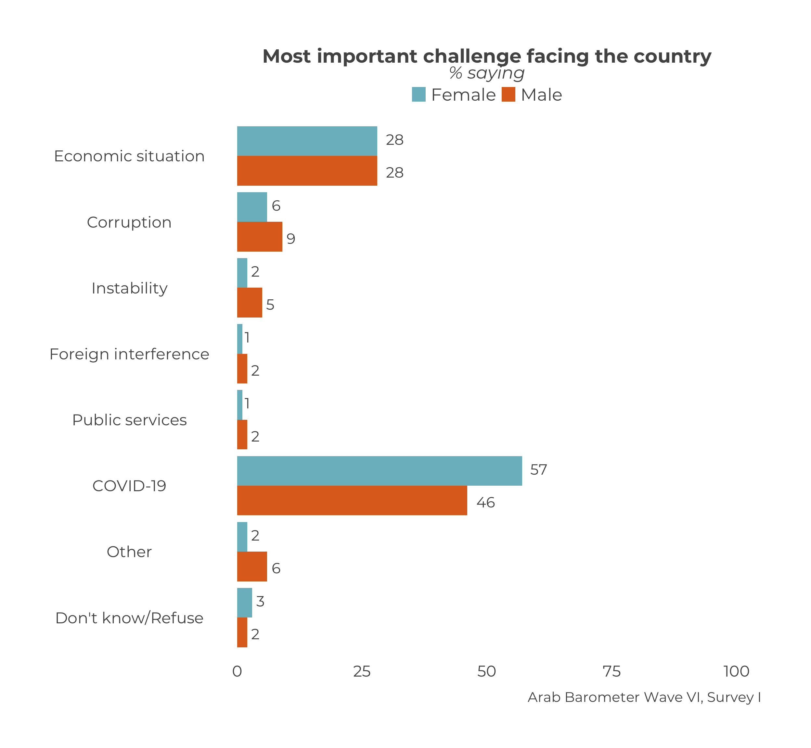

Chapter 2 Single Country Demographic Plots
This chapter will cover how to make a frequency graph by a demographic for a single country.
2.1 Create a Single Graph
This section will go over how to make a one-off frequency graph by a demographic for a single country.
At the end, your code will look like the following:
survey1 %>%
calculate_demographic_smry_individual("Q1COVID19",
.dem = "gender",
.country = "Algeria") %>%
plot_demographic_smry_individual(.caption = "Arab Barometer Wave VI, Survey I, Algeria")That code will produce the following graph:

2.1.1 Creating a Summary
The first step in creating a plot is to gather the data you want to display and organize it. You do this with the calculate_demographic_smry_individual() function. You can learn more about this function in section 6.2 in the larger ArabBarometR guide.
Just like calculate_smry_individual(), the three main parameters you need to provide to this function are (1) the data you are using, (2) the variable you want to plot, and (3) the country you want to plot it for. To see all the input parameters for the function, type the code ?calculate_demographic_smry_individual in your R console.
In this example, the variable we want to plot is Q1COVID19, and the country we want to plot it for is Algeria1.
survey1 %>% # Data
calculate_demographic_smry_individual("Q1COVID19", # Variable to summarize
.country = "Algeria") # CountryThe above code will produce the following output:
## $age
## # A tibble: 10 x 3
## age Q1COVID19 Percent
## <chr> <dbl+lbl> <dbl>
## 1 18-29 1 [Very concerned] 29
## 2 18-29 2 [Somewhat concerned] 50
## 3 18-29 3 [Somewhat not concerned] 4
## 4 18-29 4 [Not at all concerned] 16
## 5 18-29 666 [Don't know/Refuse] 0
## 6 30+ 1 [Very concerned] 27
## 7 30+ 2 [Somewhat concerned] 42
## 8 30+ 3 [Somewhat not concerned] 10
## 9 30+ 4 [Not at all concerned] 21
## 10 30+ 666 [Don't know/Refuse] 0
##
## $gender
## # A tibble: 9 x 3
## gender Q1COVID19 Percent
## <fct> <dbl+lbl> <dbl>
## 1 Male 1 [Very concerned] 22
## 2 Male 2 [Somewhat concerned] 44
## 3 Male 3 [Somewhat not concerned] 9
## 4 Male 4 [Not at all concerned] 25
## 5 Male 666 [Don't know/Refuse] 0
## 6 Female 1 [Very concerned] 33
## 7 Female 2 [Somewhat concerned] 44
## 8 Female 3 [Somewhat not concerned] 8
## 9 Female 4 [Not at all concerned] 15
##
## $education
## # A tibble: 10 x 3
## education Q1COVID19 Percent
## <chr> <dbl+lbl> <dbl>
## 1 Higher 1 [Very concerned] 25
## 2 Higher 2 [Somewhat concerned] 49
## 3 Higher 3 [Somewhat not concerned] 11
## 4 Higher 4 [Not at all concerned] 16
## 5 Higher 666 [Don't know/Refuse] 0
## 6 Max Secondary 1 [Very concerned] 29
## 7 Max Secondary 2 [Somewhat concerned] 42
## 8 Max Secondary 3 [Somewhat not concerned] 6
## 9 Max Secondary 4 [Not at all concerned] 23
## 10 Max Secondary 666 [Don't know/Refuse] 0
##
## $income
## # A tibble: 9 x 3
## income Q1COVID19 Percent
## <chr> <dbl+lbl> <dbl>
## 1 Can cover expenses 1 [Very concerned] 28
## 2 Can cover expenses 2 [Somewhat concerned] 43
## 3 Can cover expenses 3 [Somewhat not concerned] 10
## 4 Can cover expenses 4 [Not at all concerned] 20
## 5 Can cover expenses 666 [Don't know/Refuse] 0
## 6 Cannot cover expenses 1 [Very concerned] 26
## 7 Cannot cover expenses 2 [Somewhat concerned] 48
## 8 Cannot cover expenses 3 [Somewhat not concerned] 7
## 9 Cannot cover expenses 4 [Not at all concerned] 19Woah, that’s a lot of summaries! By default, calculate_demographic_smry_individual() creates summaries for age, gender, income, and education. To specify exactly which demographic we want to group the data by, we include one more parameter.
survey1 %>% # Data
calculate_demographic_smry_individual("Q1COVID19", # Variable to summarize
.country = "Algeria", # Country
.dem = "gender") # Demographic to group data byBy specifying the parameter .dem, the function now knows it should only group the data by the variables gender. Now the output is as follows:
## $gender
## # A tibble: 9 x 3
## gender Q1COVID19 Percent
## <fct> <dbl+lbl> <dbl>
## 1 Male 1 [Very concerned] 22
## 2 Male 2 [Somewhat concerned] 44
## 3 Male 3 [Somewhat not concerned] 9
## 4 Male 4 [Not at all concerned] 25
## 5 Male 666 [Don't know/Refuse] 0
## 6 Female 1 [Very concerned] 33
## 7 Female 2 [Somewhat concerned] 44
## 8 Female 3 [Somewhat not concerned] 8
## 9 Female 4 [Not at all concerned] 15The function calcuate_demographic_smry() creates a named list. In this list, each item is a summary broken down by a demographic and the name of each item is that demographic.
Let’s save our gender demographic summary and move on to plotting it.
Q1COVID19_gender <- survey1 %>%
calculate_demographic_smry_individual("Q1COVID19",
.country = "Algeria",
.dem = "gender")2.1.2 Plotting the Summary
The next step is plot the summary we just created. To do this, we use the function plot_demographic_smry_individual(). You can learn more about this function in section 7.2 of the ArabBarometR Guide.
There is only one necessary parameter to use plot_smry_individual(): the summary data frame. For a complete list of acceptable parameters and documentation, you can run ?plot_demographic_smry_individual in your R console.
Now, we can plug our summary into the plot function:
plot_demographic_smry_individual(Q1COVID19_gender)The above code is the same as:
Q1COVID19_gender %>%
plot_demographic_smry_individual()Both stylings of code produce the following graph:
Yet again, we see the caption needs to be changed. We can change it the same way we did in Chapter 1.
Q1COVID19_gender %>%
plot_demographic_smry_individual(
.caption = "Arab Barometer Wave VI, Survey I, Algeria"
)Now we have the graph:

Since Q1COVID19_gender is the same as survey1 %>% calculate_demographic_smry_individual("Q1COVID19", .country = "Algeria", .dem = "gender"), we can substitute the former with the latter to get the original code in our example. This will give us the same plot that we just created.
survey1 %>%
calculate_demographic_smry_individual("Q1COVID19",
.dem = "gender",
.country = "Algeria") %>%
plot_demographic_smry_individual(.caption = "Arab Barometer Wave VI, Survey I, Algeria")2.2 Create Many Graphs
We will follow the same steps from Chapter one to create many graphs at once.
- First, identify the variables to plot.
- Second, create summaries of those variables.
- Third, plot those summaries.
At the end of this section, your code will look like the following:
#.....................Identify the variables.....................
variables_2_plot <- list("Q1COVID19",
"Q2061A",
"Q609")
names(variables_2_plot) <- c("Q1COVID19",
"Q2061A",
"Q609")
#......................Create the summaries......................
gender_summaries <- survey1 %>%
calculate_demographic_smry_individual(variables_2_plot,
"Algeria",
.dem = "gender")
#.......................Plot the summaries.......................
gender_plots <- map(gender_summaries,
plot_demographic_smry_individual,
.caption = "Arab Barometer Wave VI, Survey I")The result is a named list of plots. Each element in the list is a plot. The element is named for the variable it is a plot of.
For example, to see the plot for variable Q1COVID19, run the following code:
gender_plots$Q1COVID19To see the plot for variable Q2061A, run the following code:
gender_plots$Q2061A
Finally, to see the plot for variable Q609, run the following code:
gender_plots$Q609
That’s it! The only limit on the number of graphs you can create at once is the time it will take R to make them. The more graphs you try to create at once, the longer it will take.
The steps to creating a named variable list are exactly the same as the ones we reviewed in Chapter 1; therefore, we will begin by creating summaries. For a refresher on creating named lists, click here. We will use the same variables as in Chapter 1: Q1COVID19, Q2061A, and Q609.
Let’s begin.
2.2.1 Create Summaries
The same function used to create a single summary is used to create many summaries: calculate_demographic_smry_individual(). Recall it takes three parameters: (1) the data you are using, (2) the variable(s) you want to plot, and (3) the country you are creating the plot for. Now, instead of one variable, you supply the list of variables.
survey1 %>% # Data
calculate_demographic_smry_individual(variables_2_plot, # Variables to summarize
"Algeria") # CountryThe above code produces a nested named list. Each element in the list is another named list. Each element in the outer list is named for a variable you want to create summaries for. The inner list of each element is a summary with the data grouped by age, gender, income, and education. You can think of it like the following bullet point list:
calculate_demographic_smry_individualoutputQ1COVID19ageQ1COVID19 summary grouped by agegenderQ1COVID19 summary grouped by genderincomeQ1COVID19 summary grouped by incomeeducationQ1COVID19 summary grouped by education
Q2061AageQ2061A summary grouped by agegenderQ2061A summary grouped by genderincomeQ2061A summary grouped by incomeeducationQ2061A summary grouped by education
Q609ageQ609 summary grouped by agegenderQ609 summary grouped by genderincomeQ609 summary grouped by incomeeducationQ609 summary grouped by education
For this example, we will again only be focusing on gender plots. To get only gender summaries, just specify the .dem parameter.
survey1 %>% # Data
calculate_demographic_smry_individual(variables_2_plot, # Variables to summarize
"Algeria", # Country
.dem = "gender") # DemographicNow, the output of this function looks like this bullet point list:
calculate_demographic_smry_individual(.dem="gender")outputQ1COVID19genderQ1COVID19 summary grouped by gender
Q2061AgenderQ2061A summary grouped by gender
Q609genderQ609 summary grouped by gender
Much more manageable .
Let’s save this outcome as an object and move on to plotting.
gender_summaries <- survey1 %>%
calculate_demographic_smry_individual(variables_2_plot,
"Algeria",
.dem = "gender") 2.2.2 Plot the Summaries
Again, the same function to create one plot is used to create many plots: plot_demographic_smry_individual(). Just like in Chapter 1, we need to use the map function.
In this case, you supply the list of summaries you just created, and the plot_demographic_sumry_individual() function. The code follows:
map(
gender_summaries, # List of summaries
plot_demographic_smry_individual # Plotting function
)The code produces the following output:
map(
gender_summaries, # List of summaries
plot_demographic_smry_individual # Plotting function
)## $Q1COVID19##
## $Q2061A##
## $Q609


Notice, yet again, the caption needs to be changed. To change the caption for all the graphs, just add one line to the map function.
map(
gender_summaries, # List of summaries
plot_demographic_smry_individual, # Plotting function
.caption = "Arab Barometer Wave VI, Survey I" # Caption
)## $Q1COVID19##
## $Q2061A##
## $Q609


Congratulations! You have created three plots at once. You can store them in as a single list and call them one at a time.
gender_plots <- map(
gender_summaries, # List of summaries
plot_demographic_smry_individual, # Plotting function
.caption = "Arab Barometer Wave VI, Survey I" # Caption
)Now, all three plots have been stored in a named list named gender_plots. To look at the first plot:
gender_plots$Q1COVID19
To see the plot for variable Q2061A, run the following code:
gender_plots$Q2061A
Finally, to see the plot for variable Q609, run the following code:
gender_plots$Q609
You have now completed all steps in the example code. Congrats!
If the style of this code is confusing, see Create a Summary in Chapter 1↩︎